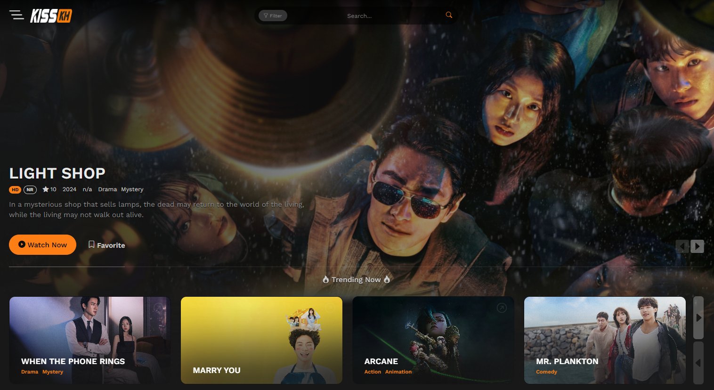

KissKh - Stream HD K-Dramas & Asian Dramas with English Subtitles & Dubs
- KissKh live
- KissKh TV live
- KissKh Official live
KissKh is a trusted platform for drama enthusiasts, offering a vast collection of Asian Dramas and K-Dramas, from timeless classics to the latest trending hits. Whether you're looking for heartwarming stories or gripping emotional journeys, KissKh has something for everyone. With options for HD and 4K streaming, regular content updates, and a seamless viewing experience, KissKh provides global access to the best in drama entertainment, including English subtitles and dubs for an enhanced experience.
Welcome to KissKh: The Ultimate Drama Experience
KissKh is more than just a streaming platform—it's your front-row ticket to the best in Asian drama entertainment. From the heart-pounding thrill of K-Dramas to the tear-jerking moments of C-Dramas and J-Dramas, we bring the stories you crave, whenever you want them, in stunning HD.
Ready to dive into a world of emotional rollercoasters, epic romances, and unforgettable characters? With KissKh, every drama is a new adventure—waiting for you to press play.
Why KissKh is Your Drama Destination
- Free Streaming, Forever: Why pay for subscriptions when you can stream all your favorite shows for free? KissKh is 100% free—forever.
- Unmatched Variety: Whether you're in the mood for a feel-good romance or an intense thriller, KissKh has you covered. With a massive library of K-Dramas, C-Dramas, and J-Dramas, you'll never run out of options.
- HD Quality & Smooth Streaming: No more pixelated screens or buffering. We bring you crisp, clear, HD-quality videos, so you can binge-watch without interruptions.
- Multilingual Subtitles: You’re not limited to just one language. Watch with subtitles in multiple languages, including English, Spanish, French, and more—because everyone should enjoy the drama.
Your Next Drama Obsession Starts Here
At KissKh, we don’t just offer shows—we offer experiences. Explore our handpicked categories to find your new favorite show:
- Romantic Dramas: Get swept away in heart-melting love stories like Crash Landing on You or Eternal Love. These shows are sure to tug at your heartstrings.
- Historical Dramas: Transport yourself to another time with epic tales like Empress Ki and Ruyi’s Royal Love in the Palace. Feel the weight of history come alive.
- Crime & Thriller Dramas: If you're a fan of suspense, you're in for a treat. Watch shows like Signal and The Bad Kids that will have you on the edge of your seat.
- Slice-of-Life & Family Dramas: These are the shows that hit close to home. Watch Reply 1988 and Mother for those warm, relatable moments that make life so special.
- Fantasy & Supernatural Dramas: Ready to get lost in worlds of magic and mystery? Goblin and The Untamed will transport you to places beyond your wildest dreams.
- Inspirational Dramas: Need a little hope? Watch The Miracle in Cell No. 7 and Hope for stories that uplift and inspire.
Join a Global Community of Drama Lovers
You're not just streaming content—you're becoming part of a passionate, global community. Share your thoughts, ratings, and reviews on the dramas you love. Let fellow fans know what’s worth watching and discover hidden gems through their recommendations.
From heartwarming romances to edge-of-your-seat thrillers, KissKh brings fans together. Join the conversation and become part of the drama family.
Ready to Start Your Drama Journey?
The best dramas are waiting for you, and they’re just one click away. Don’t waste any more time. Dive into the world of KissKh—where every episode is a new adventure. Your next favorite show is waiting for you.
Why Choose KissKh for Your Drama Fix?
- Free Access to Premium Content: Stream high-quality Asian dramas and films at no cost.
- Global Drama Library: A diverse collection of K-Dramas, J-Dramas, C-Dramas, and more for all tastes.
- Regularly Updated Content: New episodes, films, and series are added regularly to keep the library fresh.
- Community Recommendations: Discover top-rated and trending titles through user reviews and ratings.
- Easy Navigation: KissKh’s simple interface makes it easy to find and enjoy your favorite dramas.
How to Maximize Your Experience on KissKh
- Explore Curated Sections: Discover trending titles in "Top Rated" and "Editor’s Picks."
- Advanced Search Filters: Narrow down results by genre, year, or country for a personalized experience.
- Enable Subtitles: Watch with subtitles in your language of choice.
- Bookmark Favorites: Save films and shows to your watchlist for quick access.
- Stay Updated: Visit the “Latest Updates” section for the newest episodes and films.
- Use Community Reviews: Check user ratings and reviews to discover the best dramas.
Legal and Safety Considerations
Content Hosting and Streaming
- KissKh uses third-party servers to stream content and complies with DMCA takedown requests.
Streaming Legality
- Streaming laws may vary by country—ensure you're aware of local regulations before using KissKh.
- We recommend using a VPN for additional privacy and secure access.
Frequently Asked Questions (FAQs)
Is KissKh free?
Yes, all content on KissKh is free to stream without subscription fees.
Do I need an account to use KissKh?
No, you can watch without registering. Signing up provides extra features like watchlists.
Are subtitles available on KissKh?
Yes, KissKh offers subtitles in multiple languages.
Can I download films from KissKh?
No, KissKh is a streaming-only platform.
Is KissKh safe to use?
Yes, KissKh is safe, but using a VPN adds an extra layer of security.
What devices are compatible with KissKh?
Compatible with desktops, laptops, smartphones, tablets, and smart TVs.
How often is content updated?
New episodes and films are added daily.
What if a video doesn’t play?
Try refreshing the page, switching servers, or checking your internet connection.
Conclusion
Summary of KissKh’s Value: KissKh provides a vast library of free, high-quality Asian Dramas and films with multilingual subtitles for global audiences. Enjoy seamless streaming on any device without subscription fees.
Final Thought: Start streaming on KissKh today and dive into the captivating worlds of your favorite K-Dramas and Asian Dramas!